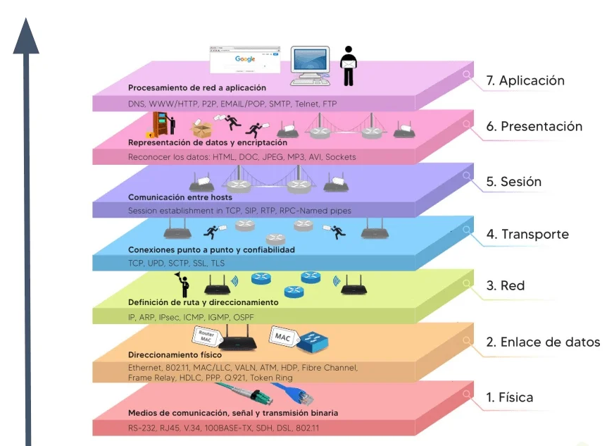

¿Qué es una Red Informática?
 Resumen del Tema
Resumen del Tema
Con el aumento de la tecnología en la sociedad cada vez son más los términos existentes que pueden llegar a confusión. Todos hemos oído hablar de las redes informáticas, pero ¿sabes que es una red informática?
Una red informática es un conjunto de dispositivos que se encuentran interconectados entre si a través de un medio, estos intercambian información y comparten recursos. Son sistemas de comunicación en la que distintos dispositivos actúan de emisor y receptor de manera alterna. Forman parte de una red informática los dispositivos, los medios de conexión, la estructura y el modo de funcionamiento de las redes, la información y los recursos compartidos
Las redes informáticas cuentan con los siguientes elementos:
- Servidores: los servidores son los que procesan el flujo de los datos y centralizan el control de la red.
- Clientes: se refiere a los computadores que no son servidores, pero que forman parte de la red permitiendo a los usuarios el acceso a esta.
- Medios de transmisión: se trata del cableado que permite la transmisión de la información.
- Elementos de hardware: son las piezas que permiten el establecimiento físico de la red.
- Elementos de software: son los programas requeridos para administrar todo el sistema operativo.
¿Qué es una red informática y cómo funciona?

El funcionamiento de las redes informáticas viene definido por distintos estándares, el estándar más extendido es el modelo TCP/IP que se basa en el modelo teórico OSI. La estructura de una red puede ser de cliente-servidor donde los dispositivos desempeñan las funciones de servidor y cliente a la vez ofreciendo y consumiendo información o recursos. Para el funcionamiento de estas redes se requiere de profesionales expertos que sean capaces de configurar y mantener todo el sistema informático.
¿Qué son las redes informáticas y sus tipos?
Los tipos de redes informáticas se clasifican según su tamaño o rango de alcance:
- Red de área personal (PAN): esta formada por los dispositivos de una única persona.
- Red inalámbrica de área personal (WPAN): es como la anterior, pero de conexión inalámbrica.
- Red de área local (LAN): son conexiones de rango de alcance local como dentro de un mismo edificio.
- Red de área local inalámbrica (WLAN): es una red LAN, pero inalámbrica.
- Red de área de campus (CAN): es una red de alta velocidad que conecta las redes locales en un área geográfica, como dentro de un campus universitario.
- Red de área metropolitana (MAN): red de alta velocidad que aporta cobertura en un área geográfica extensa
- Red de área amplia (WAN): da cobertura a un área extensa utilizado fibra óptica o satélites.
- Red LAN lógica (VLAN): se instala sobre una red física para incrementar el rendimiento y la seguridad.
¿Cuáles son las funciones de las redes informáticas?
La función principal de las redes informáticas es compartir recursos e información en la distancia. Esto se realiza asegurando siempre la confiabilidad y seguridad de la información. Las redes informáticas sirven para garantizar la disponibilidad de la información y aumentar la velocidad de transmisión de los datos, reduciendo el coste general de estas acciones.
¿Qué es un protocolo?
En el ámbito de redes, un protocolo es un conjunto estandarizado de reglas para formatear y procesar datos. Los protocolos permiten que los ordenadores se comuniquen entre sí.
En las redes, un protocolo es un conjunto de reglas para formatear y procesar datos. Los protocolos de red son como un lengua franca para los ordenadores. Los ordenadores de una red pueden utilizar software y hardware muy diferentes; sin embargo, el uso de protocolos les permite comunicarse entre sí.
Los protocolos estandarizados son como una lengua franca que los ordenadores pueden utilizar, de forma similar a como dos personas de diferentes partes del mundo no hablan la lengua materna del otro, pero pueden comunicarse utilizando una tercera lengua compartida. Si un ordenador utiliza el Protocolo de Internet (IP) y un segundo ordenador también lo hace, podrán comunicarse, al igual que representantes de todo el mundo en la ONU se comunican entre ellos mediante el uso de las 6 lenguas oficiales. Pero si un ordenador utiliza el IP y el otro no conoce este protocolo, no podrán comunicarse.
En Internet hay diferentes protocolos para diferentes tipos de procesos. Con frecuencia, se habla de los protocolos en función de la capa del modelo OSI a la que pertenecen.
¿Qué son las capas del modelo OSI?

El modelo de interconexión de sistemas abiertos (OSI) es una representación abstracta del funcionamiento de Internet. Contiene 7 capas, y cada capa representa una categoría diferente de funciones de red.
Los protocolos hacen posible estas funciones de red. Por ejemplo, el Protocolo de Internet (IP) es el responsable de enrutar los datos indicando de dónde vienen los paquetes de datos* y cuál es su destino. El IP hace posible las comunicaciones entre redes. Por ello, el IP se considera un protocolo de capa de red (capa 3).
Por ejemplo, el Protocolo de control de transmisión (TCP) asegura que el transporte de paquetes de datos en redes se realice sin problemas. Por tanto, el TCP se considera un protocolo de la capa de transporte (capa 4).
Un paquete es un pequeño segmento de datos; todos los datos que se envían por la red se dividen en paquetes.
¿Qué protocolos se ejecutan en la capa de red?
Como se ha descrito anteriormente, el IP es un protocolo de capa de red responsable del enrutamiento. Pero no es el único protocolo de la capa de red.
IPsec: la seguridad del protocolo de Internet (IPsec) establece conexiones IP cifradas y autenticadas a través de una red privada virtual (VPN). Técnicamente, IPsec no es un protocolo, sino un conjunto de protocolos que incluye el protocolo de seguridad de encapsulación (ESP), el encabezado de autenticación (AH) y las asociaciones de seguridad (SA).
ICMP: el protocolo de control de mensajes de Internet (ICMP) informa de errores y proporciona actualizaciones de estado. Por ejemplo, si un enrutador no puede entregar un paquete, enviará un mensaje ICMP a la fuente del paquete.
IGMP: el protocolo de gestión de grupos de Internet (IGMP) establece conexiones de red de uno a varios. El IGMP ayuda a establecer la multidifusión, lo cual implica que varios ordenadores pueden recibir paquetes de datos dirigidos a una dirección IP.
¿Qué otros protocolos se utilizan en Internet?
Algunos de los protocolos más importantes que hay que conocer son:
- TCP: como se ha descrito antes, TCP es un protocolo de capa de transporte que garantiza la entrega fiable de datos. El TCP se diseñó para ser utilizado con el IP, y ambos protocolos suelen denominarse conjuntamente TCP/IP.
- HTTP: el protocolo de transferencia de hipertexto (HTTP) es la base de la World Wide Web, la Internet con la que interactúan la mayoría de los usuarios. Se utiliza para transferir datos entre dispositivos. HTTP pertenece a la capa de aplicación (capa 7), porque pone los datos en un formato que las aplicaciones (por ejemplo, un navegador) pueden utilizar directamente, sin necesidad de interpretación. Las capas inferiores del modelo OSI las maneja el sistema operativo de un ordenador, no las aplicaciones.
- HTTPS: el problema de HTTP es que no está encriptado: cualquier atacante que intercepte un mensaje HTTP puede leerlo. HTTPS (HTTP Secure) corrige esto encriptando los mensajes HTTP.
- TLS/SSL: Transport Layer Security (TLS) es el protocolo que utiliza HTTPS para la encriptación. TLS solía llamarse Capa de puertos seguros (SSL).
- UDP: el Protocolo de datagrama de usuarios (UDP) es una alternativa más rápida pero menos fiable al TCP en la capa de transporte. A menudo se utiliza en servicios como la transmisión de vídeo y los videojuegos, donde la rapidez en la provisión de datos es primordial.
¿Qué protocolos utilizan los enrutadores?
Los enrutadores de red utilizan determinados protocolos para descubrir las rutas de red más eficientes hacia otros enrutadores. Estos protocolos no se utilizan para transferir datos del usuario. Los protocolos de enrutamiento de red más importantes son:
- BGP: el protocolo de puerta de enlace de frontera (BGP) es un protocolo de capa de aplicación que las redes utilizan para difundir las direcciones IP que controlan. Esta información permite que los enrutadores decidan por qué redes deben pasar los paquetes de datos de camino a sus destinos.
- EIGRP: el protocolo de enrutamiento de puerta de enlace interior mejorado (EIGRP) identifica las distancias entre los enrutadores. EIGRP actualiza automáticamente el registro de las mejores rutas de cada enrutador (que se conoce como tabla de enrutamiento) y difunde esas actualizaciones a otros enrutadores de la red.
- OSPF: el protocolo Open Shortest Path First (OSPF) calcula las rutas de red más eficientes en función de diversos factores, como la distancia y el ancho de banda.
- RIP: el protocolo de información de enrutamiento (RIP) es un antiguo protocolo de enrutamiento que identifica las distancias entre enrutadores. El RIP es un protocolo de capa de aplicación.
¿Cómo se utilizan los protocolos en los ciberataques?
Como sucede en cualquier aspecto de la informática, los atacantes pueden aprovechar el funcionamiento de los protocolos de red para comprometer o sobrecargar los sistemas. Muchos de estos protocolos se utilizan en ataques de denegación de servicio distribuido (DDoS). Por ejemplo, en un ataque de inundación SYN, un atacante se aprovecha de cómo funciona el protocolo TCP. Envían paquetes SYN para iniciar repetidamente un protocolo de enlace TCP con un servidor, hasta que el servidor no puede dar servicio a los usuarios legítimos porque sus recursos están ocupados por todas las conexiones TCP falsas.
Cloudflare ofrece una serie de soluciones para detener estos y otros ciberataques. Magic Transit de Cloudflare es capaz de mitigar los ataques en las capas 3, 4 y 7 del modelo OSI. En el caso de un ataque de inundación SYN, Cloudflare se encarga del proceso de intercambio de información TCP en nombre del servidor, de modo que los recursos del servidor nunca se vean sobrecargados por las conexiones TCP abiertas.